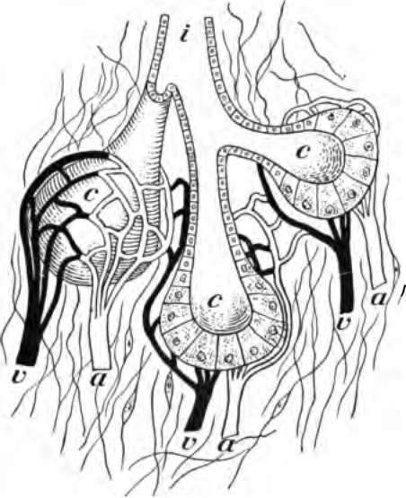
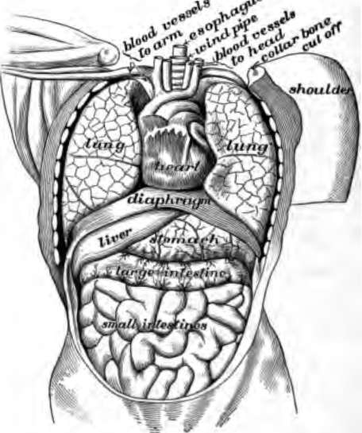
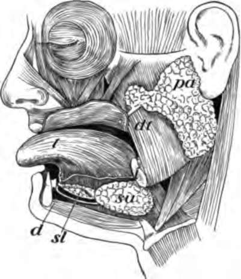

Chapter VI. How Food Is Used By The Body
Description
This section is from the book "The Human Body And Health", by Alvin Davison. Also available from Amazon: The Human Body and Health.
Chapter VI. How Food Is Used By The Body
The Organs Of Digestion
In order that food may support life, it must get into the blood and be carried to all parts of the body. It cannot enter the blood until it has been changed into a special souplike liquid. The process of making this liquid is called digestion. The organs used for this purpose form the digestive system. This consists of a tube over thirty feet long, called the alimentary canal, and other organs named glands.
Fig. 24. Diagram to show the working parts of a gland, v and a are blood tubes with thin-walled branches around the parts of the gland c. These take material from the blood and, after changing it, send it to the mouth, stomach or other places through the duct i.
Nature Of A Gland
A gland is a tiny straight or coiled tube or collection of branching tubes formed of cells (Fig. 24). A gland is able to take certain materials from the blood and manufacture them into a fluid useful to the body. The sweat moistening the skin and the fluid collecting in the mouth are formed by glands. The liver is the largest gland in the body and near to it is a small gland called the pancreas. The liquid formed by a gland is known as its secretion. The channel through which the secretion flows out is named the duct.
Fig. 25. Organs in the body cavity viewed from the front.
The Alimentary Canal
The cavity within the trunk contains the greater part of the alimentary canal which is a tube for the digestion of the food. The trunk cavity is separated into two parts by a thin plate of tissue, known as the diaphragm. The upper part, containing the heart, gullet and lungs, is the cavity of the thorax. The lower part, holding the stomach, intestines, liver, pancreas, spleen and other organs, is the cavity of the abdomen.
The alimentary canal consists of the mouth, pharynx or throat, esophagus or gullet, the stomach and intestines. The wall of the canal is made mostly of muscle, lined with a skinlike membrane which forms in addition to some digestive juices, a slippery fluid called mucus. This lining is therefore spoken of as mucous membrane.
Mucous membrane lines part of the cavity of the ear and nose, and all other channels in the body which the air touches. Mucus has the power to kill many harmful bacteria and it thus protects the body from disease.
Mouth Digestion
The fluid which moistens the food in the mouth is called saliva. A quart of it is formed daily by three salivary glands. One of these glands lies below the ear, one is on the side of the tongue and another is under the tongue. Their secretion is brought to the mouth by ducts.
The chewing of food causes the saliva to flow. The mixing of the food with the saliva increases the taste. The pleasing taste or odor of food makes the digestive juices flow into the stomach. The more food is chewed the better it will be digested in the stomach, because it will be in fine particles and there will be plenty of juice to act on them. Some of the starch of food is changed to sugar by the saliva. This is why dry bread tastes sweet after it has been chewed for some time.
Fig. 26. The salivary glands, pa, 8U, and sl; t, tongue; d, ducts opening into mouth.
Importance Of Thorough Chewing
Every mouthful of food should be chewed more than a dozen times. Experiments lately carried out prove that two thirds of a pound of food eaten, if well chewed, will furnish about the same nourishment to the body as a pound chewed in the usual way. More than a half hour is required to eat a meal properly. Foods like nuts and bananas, which are difficult to digest, may be digested by almost anyone who will take time to chew them thoroughly.
A very common cause of sickness known as indigestion or dyspepsia is swallowing food before it has been crushed into very fine particles. Headache and a pain in the region of the abdomen is usually the result of indigestion. Dizziness and even death may be due to imperfectly chewed food, which disturbs the action of the heart. To chew food thoroughly one should have good teeth.
Why Chewing Tobacco Is Harmful
When tobacco is chewed part of the poison in it is pressed out. This mixes with the juices in the mouth. The tender pink lining of the cheeks and tongue is full of tiny blood vessels. These drink in through their thin walls some of the tobacco poison and then it is carried by the blood tubes all over the body.
The poison of the tobacco is taken into the body very quickly. This is shown by the experience of boys when they use this harmful weed for the first time. A piece of tobacco as large as the thumb, if chewed only a few minutes by a boy not used to the poison, will make him dizzy and cause headache and other sick feeling. Some of the chapters which follow show how tobacco hurts a growing body. The chewing of tobacco also causes a great waste of saliva needed to help digest the food.
How Smoking Tobacco Hurts The Mouth
The smoke of the burning cigar or cigarette contains poison. This may be shown by drawing the smoke through water in which a fish is placed. In a short time the fish will die.
The blood vessels in the lining of the mouth take up some of the poison from the smoke. The blood then carries the poison to all parts of the body. Some of these are badly hurt by daily doses of poison.
The heat and gases from the burning tobacco numb the organs of taste in the tongue and other parts of the mouth. A smoker cannot then enjoy delicious food so much as one whose mouth is in perfect health.
Continue to:
- prev: Chapter V. The Care And Cooking Of Food
- Table of Contents
- next: How Food Is Used By The Body. Part 2